1- اختر دورك كمدرس اذا كان لديك اكثر من دور بالمدرسة.
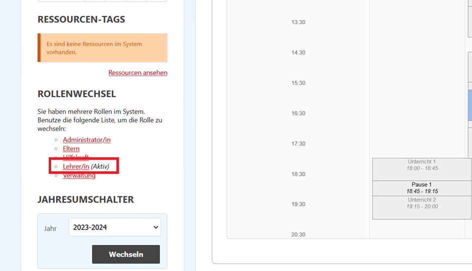
2- يمكنك الآن رؤية صفوفكم تحت مسمى Meine Klasse
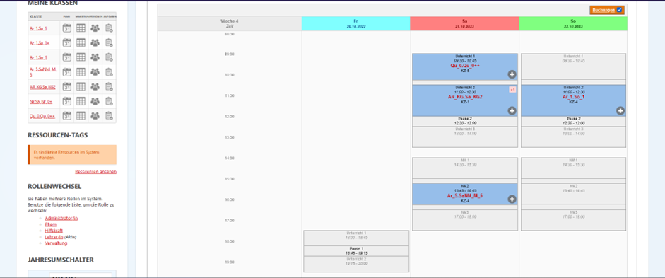
3- لأخذ غياب الطلاب يرجى الضغط على الرمز التالي
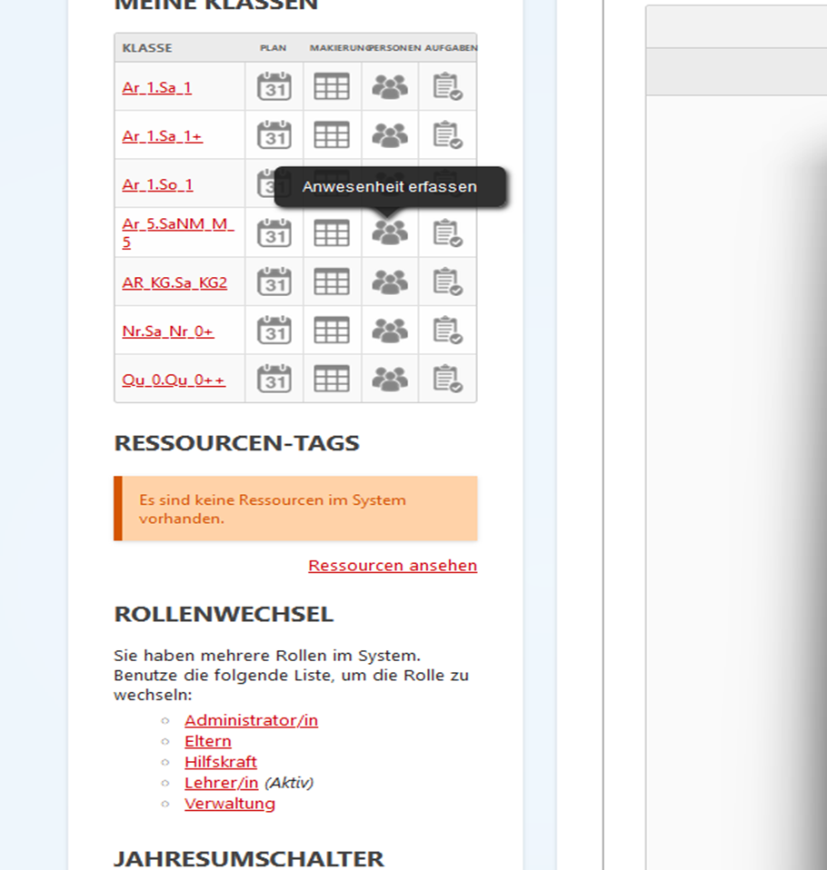
4- عليكم أولا اختيار التاريخ و ليكن سبت أو أحد حسب فصلكم المذكور
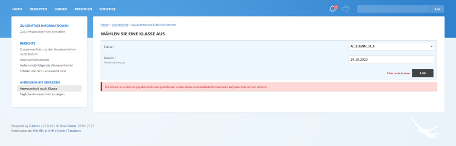
5- يمكنكم الآن رؤية الأطفال المسجلين لديكم, و اختيار إن كان الطفل حاضر ام غائب.
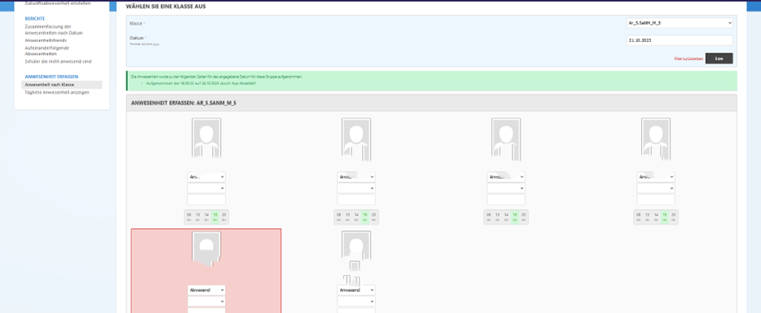
6- بعد تسجيل الغياب يجب الضغط على senden حتى يتم التسجيل.
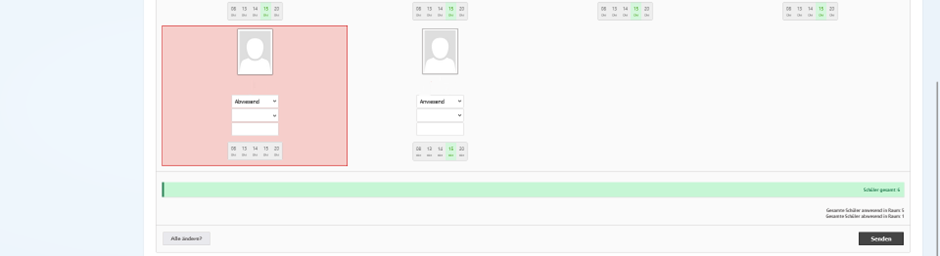
1- يمكنكم تحضير الخطة الأسبوعية و تخطيطها بالبدء بإضافة وحدات الكتاب الذي تدرسونه بالضغط على Planner.
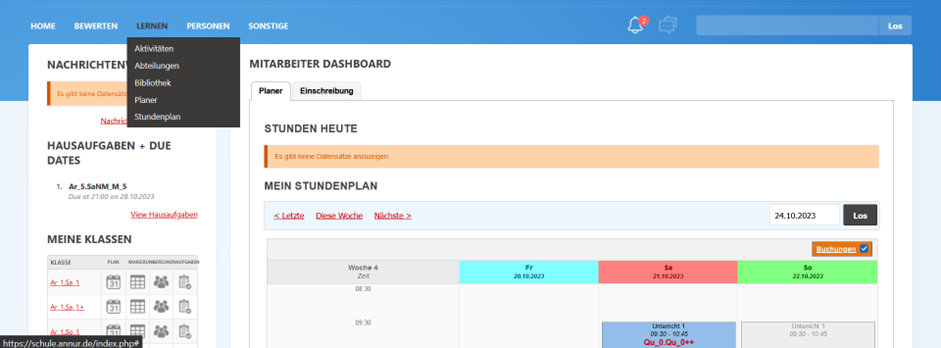
2- ثم اختيار unterrichtsplanner
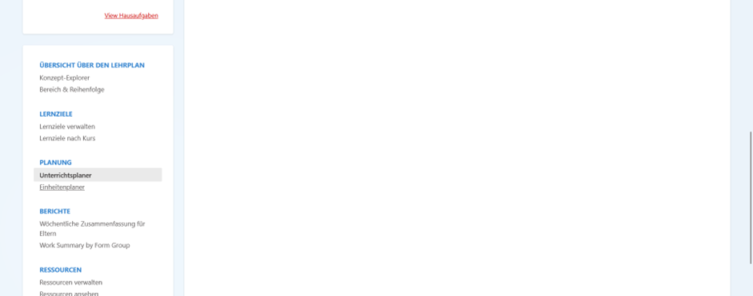
3- و اختيار من فوق اعلى الشمال الفصل المراد اضافة الوحدات له.
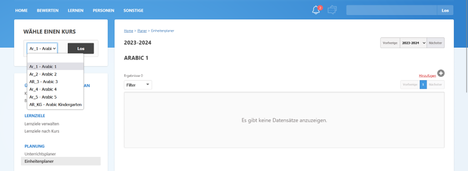
4- قم بالضغط على اضافة أو Hinzufügen .
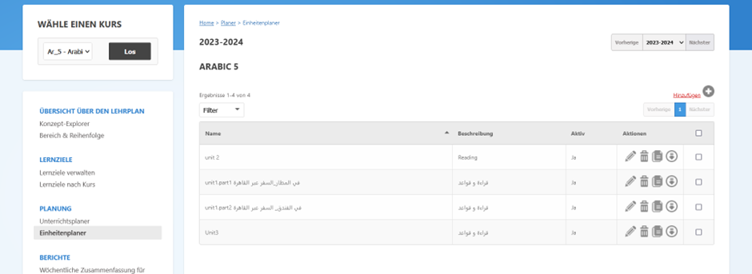
5- ثم اكتب اسم الدرس و ملاحظاتك ثم اضغط على senden لحفظ اختياراتك.
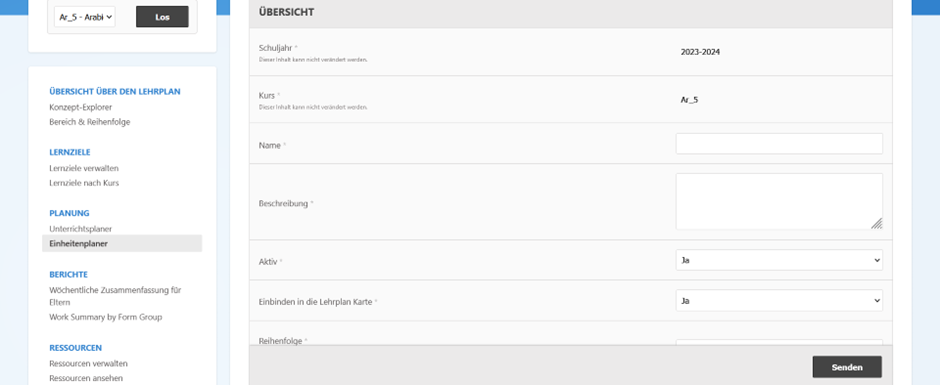
6- لا تنس اتاحة الوحدة للفصل المراد تدريسة قبل حفظ التغبييرات.
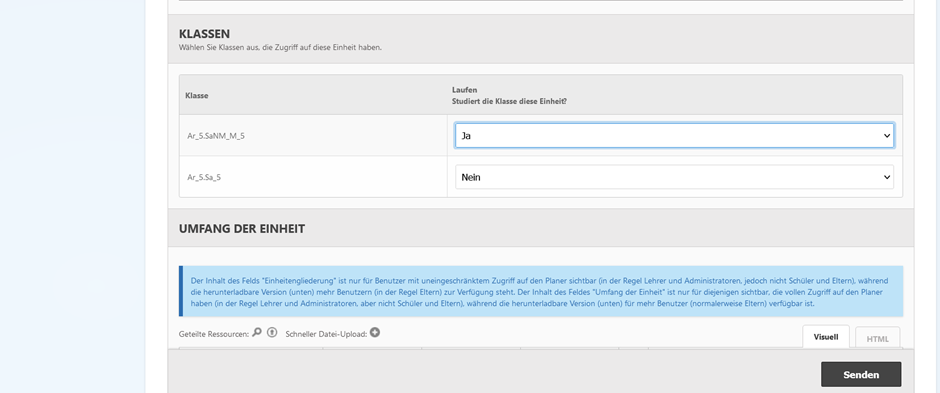
7- بالرجوع مرة اخري للصفحة الرئيسية و الضغط على planner للفصل المراد اضافة درس اليه.
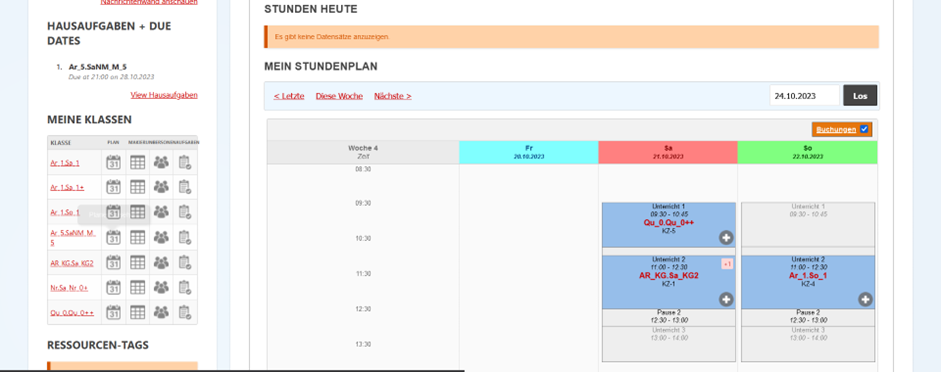
8- ثم الضغط على Hinzufügenلاضافة درس جديد.
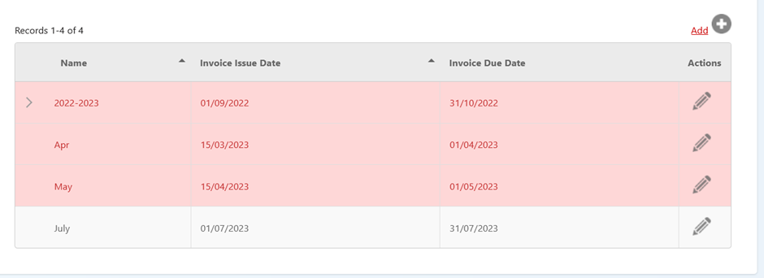
يرجى التفريق بين اضافة وحدة و اضافة درس للوحدة.
9- ثم اختيار الوحدة ثم كتابة اسم الدرس و إن كان هناك تدريبات أو واجبات.
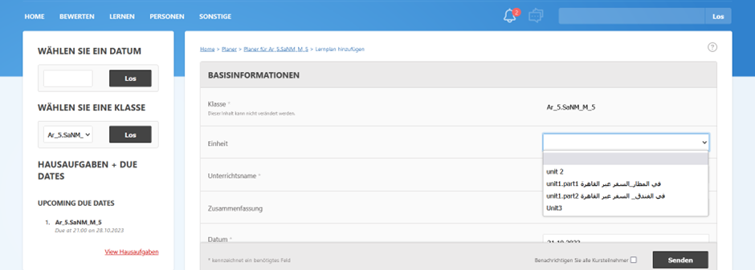
10- لا تنس الضغط على senden في النهاية و ستجد دائما في المخطط أو ال planner كل الدروس التي اضفتها.
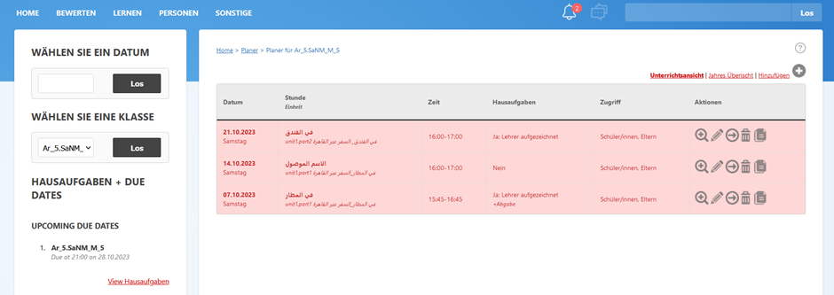